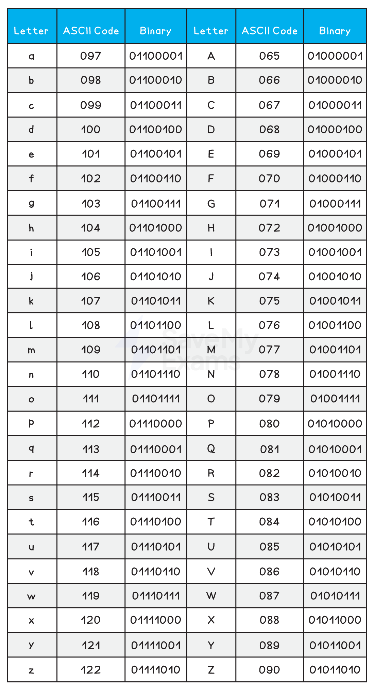

Character Sets
What is a character set?
- A character set is all the characters and symbols that can be represented by a computer system
- Each character is given a unique binary code
- Character sets are ordered logically, the code for ‘B’ is one more than the code for ‘A’
- A character set provides a standard for computers to communicate and send/receive information
- Without a character set, one system might interpret 01000001 differently from another
- The number of characters that can be represented is determined by the number of bits used by the character set
- Two common character sets are:
- American Standard Code for Information Interchange (ASCII)
- Universal Character Encoding (UNICODE)
ASCII
What is ASCII?
- ASCII is a character set and was an accepted standard for information interchange
- ASCII uses 7 bits, providing 2 7 unique codes (128) or a maximum of 128 characters it can represent

- ASCII only represents basic characters needed for English, limiting its use for other languages
Extended ASCII
- Extended ASCII uses 8 bits, providing 256 unique codes (2 8 = 256) or a maximum of 256 characters it can represent
- Extended ASCII provides essential characters such as mathematical operators and more recent symbols such as ©
Limitations of ASCII & extended ASCII
- ASCII has a limited number of characters which means it can only represent the English alphabet, numbers and some special characters
- A, B, C, ………, Z
- a, b, c,…,z
- 0, 1, 2,…, 9
- !, @, #, ……
- ASCII cannot represent characters from languages other than English
- ASCII does not include modern symbols or emojis common in today’s digital communication
UNICODE
What is UNICODE?
- UNICODE is a character set and was created as a solution to the limitations of ASCII
- UNICODE uses a minimum of 16 bits, providing 2 16 unique codes (65,536) or a minimum of 65,536 characters it can represent
- UNICODE can represent characters from all the major languages around the world
Exam questions often ask you to compare ASCII & UNICODE, for example the number of bits, number of characters and what they store
ASCII vs UNICODE
| ASCII | UNICODE | |
|---|---|---|
| Number of bits | 7-bits | 16-bits |
| Number of characters | 128 characters | 65,536 characters |
| Uses | Used to represent characters in the English language. | Used to represent characters across the world. |
| Benefits | It uses a lot less storage space than UNICODE. | It can represent more characters than ASCII. It can support all common characters across the world. It can represent special characters such as emoji’s. |
| Drawbacks | It can only represent 128 characters. It cannot store special characters such as emoji’s. |
It uses a lot more storage space than ASCII. |
The computer stores text using the ASCII character set.
Part of the ASCII character set is shown:
| Character | ASCII Denary Code |
|---|---|
| E | 69 |
| F | 70 |
| G | 71 |
| H | 72 |
(a) Identify the character that will be represented by the ASCII denary code 76 [1]
(b) Identify a second character set [1]
Answers
(a) L (must be a capital)
(b) UNICODE
Representing Sound
How Sound is Sampled & Stored
How is sound sampled & stored?
- Measurements of the original sound wave are captured and stored as binary on secondary storage
- Sound waves begin as analogue and for a computer system to understand them they must be converted into a digital form
- This process is called Analogue to Digital conversion (A2D)
- The process begins by measuring the amplitude of the analogue sound wave at a point in time, called samples
- Each measurement (sample) generates a value which can be represented in binary and stored
- Using the samples, a computer is able to create a digital version of the original analogue wave
- The digital wave is stored on secondary storage and can be played back at any time by reversing the process

- In this example, the grey line represents the digital wave that has been created by taking samples of the original analogue wave
- In order for the digital wave to look more like the analogue wave the sample rate and bit depth can be changed
Sample Rate & Sample Resolution
What is sample rate?
- Sample rate is the amount of samples taken per second of the analogue wave
- Samples are taken each second for the duration of the sound
- The sample rate is measured in Hertz (Hz)
- 1 Hertz is equal to 1 sample of the sound wave

In this example you can see that the higher the sample rate, the closer to the original sound wave the digital version looks

- The sampling rate of a typical audio CD is 44.1kHz (44,100 Hertz or 44,100 samples per second)
- Using the graphic above helps to answer the question, “ Why does telephone hold music sound so bad?”
What is sample resolution?
- Sample resolution is the number of bits stored per sample of sound
- Sample resolution is closely related to the colour depth of a bitmap image, they measure the same thing in different contexts
What effect do sample rate and sample resolution have?
| Sample rate | Sample resolution | |||
|---|---|---|---|---|
| High | Low | High | Low | |
| Playback quality | ⇑ | ⇓ | ⇑ | ⇓ |
| File size | ⇑ | ⇓ | ⇑ | ⇓ |
Representing Images
Bitmap Images
What is a bitmap?
- A bitmap image is made up of squares called pixels
- A pixel is the smallest element of a bitmap image
- Each pixel is stored as a binary code
- Binary codes are unique to the colour in each pixel
- A typical example of a bitmap image is a photograph

- The more colours and more detail in the image, the higher the quality of the image and the more binary that needs to be stored
Resolution & Colour Depth
Cambridge IGCSE 0478 expects you to define resolution and colour depth*, explain how both affect* file size*, and use formulas like* width × height × colour depth to calculate storage needs. This page keeps everything focused on exam-ready phrasing and examples.
What is resolution?
- Resolution is the total amount of pixels that make up a bitmap image
- The resolution is calculated by multiplying the height and width of the image (in pixels)
- In general, the higher the resolution the more detail in the image (higher quality)
- Resolution can also refer to the total amount of pixels horizontally in a display, such as:
- Computer monitors - 1440p means 1440 pixels horizontally compared to 4K which is 3840 pixels (roughly 4 thousand)
- TVs - HD (high definition) channels have a resolution of 1080p, 1080 pixels horizontally compared to newer UHD (ultra high definition) channels with 3840 pixels (4K)
- YouTube - The quality button allows a user to change the video playback resolution from 144p (144 pixels horizontally) up to 4K
What is colour depth?
- Colour depth is the number of bits stored per pixel in a bitmap image
- The colour depth is dependent on the number of colours needed in the image
- In general, the higher the colour depth the more detail in the image (higher quality)
- In a black & white image the colour depth would be 1, meaning 1 bit is enough to create a unique binary code for each colour in the image (1=white, 0=black)
- In an image with a colour depth of 2, you would have 00, 01, 10 & 11 available binary codes, so 4 colours
- As colour depth increases, so does the amount of colours available in an image
- The amount of colours can be calculated as 2 n (n = colour depth)
| Colour Depth | Amount of Colours |
|---|---|
| 1 bit | 2 (B&W) |
| 2 bit | 4 |
| 4 bit | 16 |
| 8 bit | 256 |
| 24 bit | 16,777,216 (True Colour) |
What is the impact of resolution and colour depth?
- As the resolution and/or colour depth increases, the bigger the size of the file becomes on secondary storage
- The higher the resolution, the more pixels are in the image, the more bits are stored
- The higher the colour depth, the more bits per pixel are stored
- Striking a balance between quality and file size is always a consideration
In casual use, people say “higher resolution = better quality”. But in the exam, focus on what it actually means*:*
“Resolution is the number of pixels in an image”
Avoid vague terms like “better” and give technical impact: “more bits needed = larger file size.”

1. Define the term Pixel [1]
2. If an image has a colour depth of 2 bits, how many colours can the image represent? [1]
3. Describe the impact of changing an images resolution from 500x500 to 1000x1000 [2]
Answers
- The smallest element of a bitmap image (1 square)
- 4
- The image quality would be higher [1] the file size would be larger [1]